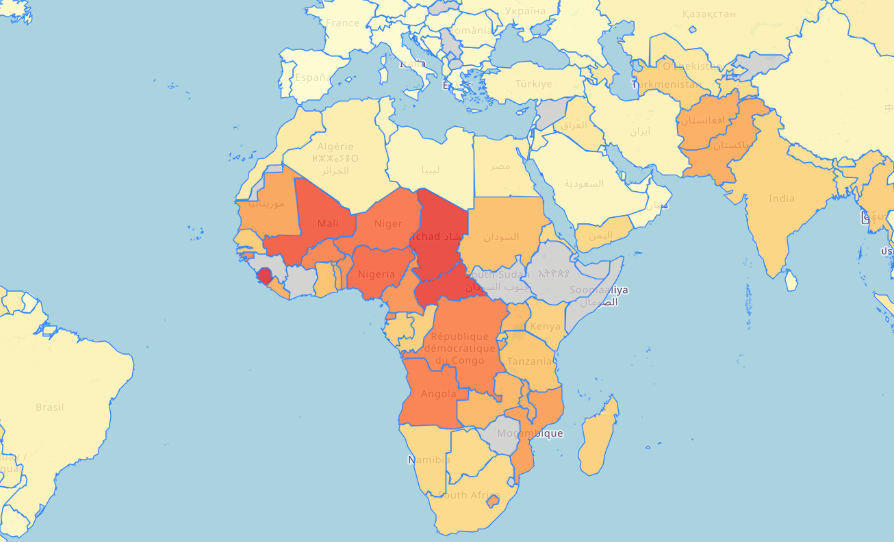
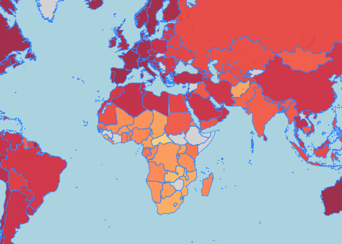

About This Project
The Global Socioeconomic Factors Map was designed to be an interactive tool to visualize various socioeconomic data across different countries. The datasets include indicators like Child Mortality, Health, Income, Inflation, Life Expectancy, and GDP per Capita. By selecting a dataset from the dropdown menu, users can explore how these factors vary globally and analyze trends and patterns.
Design Process
My initial idea was to create a comprehensive visualization that included disease data across multiple years and countries. I attempted to use a much larger dataset from Kaggle that included over 10,000 rows with repeated countries and diseases over different years. However, I found it challenging to clean and organize this data in a meaningful way for visualization. After several iterations and failed attempts, I pivoted to a simpler dataset that focused on socioeconomic indicators for each country.
I started by sketching initial ideas for the map and interaction design. My sketches included ideas for dropdowns, legends, and popups that would display detailed information for each country.
Design Choices
-Color Encoding: I used a color gradient to represent the values of each dataset. This allows users to
quickly identify countries with higher or lower values for the selected indicator.
-Dropdown Menu: The dropdown menu was included to let users easily switch between datasets without
overwhelming the map interface.
-Dynamic Legend: The legend updates dynamically to reflect the selected dataset and its range, making it
easier to interpret the visualization.
-Popups: Detailed popups were included to provide users with a mini bar chart of all values of a specific country.
-Clicks:
Discoveries and Insights
Through this visualization, I observed several patterns:
- Countries with higher GDP per capita tend to have better health indicators like life expectancy.
- Countries with high child mortality rates often have low income levels.
- Inflation rates varied widely, and their impact on other indicators can be explored further.
For example, when visualizing Life Expectancy, it was clear that many African countries had significantly lower values compared to European and North American countries. This highlighted the differences in global healthcare and living conditions.
Evidence from Visualizations
Below are screenshots illustrating some of the patterns and insights discovered through the map:
Child Mortality Findings
Life Expectancy Findings
Challenges and Lessons Learned
One major challenge was finding a good dataset, and how to display the data given. For example, my original idea
was to use a large dataset about diseases within countries. However, this proved to be difficult due to the size
of the dataset (over 10,000 rows) and the repeated countries and diseases within it. Cleaning and aggregating data for meaningful
visualization proved to be too complex within the given timeframe. This experience taught me the importance
of selecting a manageable dataset and focusing on clear, actionable insights. I decided to go with the dataset I used
because it did not have repeated countries or values, and allowed me to better focus on using D3 for my interactive data visualizations.
This Project Used the
Countries Intermediate Dataset
for the data within the visualization.
The JSON file was helped generated by the following repository:
Countries JSON
.